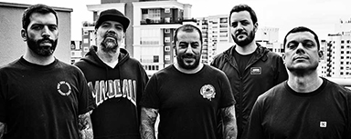

Ache sua Banda
Bandas recomendadas
Sobre o Fim
Atuando desde o final de 2004, a Sobre o Fim nasceu na cidade de Sobral, interior do Ceará, de um projeto que visava integrar o hardcore ao metal, a melodia à agressividade, ao melhor estilo das bandas do New Wave of American Metal, como Killswitch Engage e As I Lay Dying, mas buscando alguma autenticidade e originalidade, com letras de cunho, principalmente, político-existenciais. O calor da cidade proporcionou a agressividade necessária para que a banda fervesse os moshes locais, dando origem a um som ora rápido, ora compassado; ora melódico, ora pesado. A formação da banda já passou por diversas modificações, mas acabou por se estabilizar com Zé Wellington nos vocais, Helder Lemos na guitarra, Fernando Lucas na bateria e Cavalcante Filho no baixo, instrumentistas com visões e experiências musicais diferentes, o que contribuiu para a diversidade nas composições autorais. A Sobre o Fim vem participando com destaque de vários shows no estado e dividindo o palco com bandas como Jason (RJ), The Nation Blue (Austrália) e Head Phones President (Japão). Em festivais, a banda foi a selecionada cearense para a seletiva nordestina do ZONA PUNK & VANS APOSTAM 2008, em Natal, Rio Grande do Norte. No ano de 2009 a banda sagraria-se ainda como primeiro lugar no CONCURSO BEM VINDO AO CLUBE EMPIRE RECORDS, disputando com 20 bandas independentes do estado do Ceará. Grandes festivais como o Grito Rock, o BNB Rock Cordel e a Feira da Música de Fortaleza estão no currículo dos músicos. Com um vídeo-clipe lançado em 2008, “Sobre prisões e guerras”, música do primeiro EP da banda, “Prólogo” (Nocaute Discos, 2007), em 2009 a Sobre o Fim lançou “Interludio", EP disponibilizado gratuitamente no site oficial da banda, contendo quatro faixas, sendo três músicas inéditas e uma regravação do primeiro trabalho. O EP conceitual incluía como bônus uma história em quadrinhos interligada com as músicas, abordando a teoria do caos. Essa HQ, com roteiro do vocalista Zé Wellington, foi indicada no ano de 2010 ao Troféu HQMIX, maior prêmio dos quadrinhos nacionais, na categoria "Publicação independente especial". Em 2015, a Sobre o Fim lançou "Epílogo", com três músicas inéditas. No final de 2020 a banda fez uma transmissão ao vivo durante a pandemia do coronavírus. O registro dessa transmissão se tornou "Distante do fim", álbum ao vivo com 8 faixas.
Sobral - CE
Outras Frequências
Formada em 2007, na cidade de Sobral-CE, a Outras Frequências é uma banda de pop rock que tem influências musicais bandas como Paralamas, Jota Quest, Skank, Detonautas, Charlie Brown Jr, dentre outras. Além do trabalho cover, a banda busca constantemente conquistar o espaço autoral, tendo como primeiro trabalho a música Pode ser, a qual foi vencedora do Festival Canta Sobral de 2013, e logo em seguida tocou em rádios da cidades de Sobral e Fortaleza. Neste ano de 2017, em comemoração aos 10 anos do projeto “OUTRAS FREQUÊNCIAS”, a banda está finalizando um CD completamente autoral, onde apostam em um rock com uma pegada mais agressiva com letras que vão desde encontros amorosos ate a revolta política com o país. A banda já dividiu o palco com alguns artistas e bandas de renome nacional, como por exemplo Lucy Alves, ex-integrante do The Voice Brasil, e a banda Biquíni Cavadão. A Outras Frequências conta em sua formação com Anderson Aragão (Voz e Guitarra), Maria Clara Aragão (Guitarra), Abel Filho (Baixo) e Isac Linhares (Bateria).
Sobral-CE
Dead Fish
Dead Fish é uma banda brasileira de hardcore melódico que se formou em Vitória, Espírito Santo, no ano de 1991. O grupo lançou quatro discos e inúmeras demos antes de romper a barreira independente. Composto atualmente por Rodrigo Lima (vocal) e os paulistas Marcos Melloni (bateria), Ricardo Mastria (guitarra) e Igor Tsurumaki (baixo). O grupo conquistou projeção no âmbito nacional através do disco Zero e Um lançado pela Deckdisc em 2004, com produção de Rafael Ramos e mixado por Ryan Greene, responsável por faixas-símbolo do hardcore mundial.
Vitória - ES

CPM 22
CPM 22 é uma banda de rock brasileira formada em 1995 na cidade de Barueri, São Paulo. A banda é formada atualmente por Badauí (vocal), Luciano Garcia (guitarra), Phil Fargnoli (guitarra), Ali Zaher (baixo) e Daniel Siqueira (bateria). A banda já abriu shows de bandas internacionais como Lagwagon, No Fun at All, Down by Law e System of a Down. O CPM 22 foi uma das poucas bandas do hardcore brasileiro a ganhar um disco de ouro e fazer sucesso no mainstream, e com isso, abriu as portas para uma nova geração de bandas de rock brasileiras. Em 2008, ganharam um Grammy Latino de melhor álbum de rock brasileiro.[1]
São Paulo - SP
Supercombo
Supercombo é uma banda brasileira de rock alternativo fundada no ano de 2007, na cidade de Vitória (ES). Entre várias formações e ideias existentes, a banda conta atualmente com Leonardo Ramos (único integrante da formação original - voz, guitarra, violão); Carol Navarro (voz, contrabaixo elétrico); Paulo Vaz (teclados, piano digital, programações, efeitos) e André Dea (bateria). Desde 2008, a Supercombo centra as suas atividades em São Paulo. Já lançaram 5 álbuns de estúdio e 3 EPs virtuais..
Vitória - ES
O Teatro Mágico
O Teatro Mágico (OTM) é um grupo musical brasileiro formado em 2003 na cidade de Osasco, São Paulo, criado por Fernando Anitelli. Além disso, é um projeto que reúne elementos do circo, do teatro, da poesia, da música, da literatura, da política e do cancioneiro popular, tornando possível a junção de diferentes segmentos artísticos numa mesma apresentação. “ O Teatro Mágico está crescendo porque as pessoas estão colaborando. Elas nos ajudam a compor, e podem tirar fotos e gravar vídeos para o nosso site. Para nós, essa interação é muito importante: o público alimenta a trupe e a gente responde. É essa a fórmula que faz acontecer![1] ” Possui cinco álbuns de estúdio: Entrada para Raros, O Segundo Ato, A Sociedade do Espetáculo, Grão do Corpo e Allehop, além de alguns DVDs e álbuns ao vivo. As canções são inspiradas nas obras de Hermann Hesse, escritor alemão ganhador do Prêmio Nobel de Literatura que apresentou o conceito de teatro mágico em seu livro O Lobo da Estepe. Os integrantes da trupe se apresentam maquiados e vestidos de palhaço. Usam violões, guitarra, baixo, percussão, teclados, pianos elétricos, sintetizadores e bateria. São cinco músicos e três artistas/bailarinas performáticas.
São Paulo - SP